Nift
Native threads, snapshot captures, async pool, shared atomic/mutex handles.
Concurrency / control room
Nift · Python · Node · Bun · Go
Equivalent problems. Different execution models.
Execution lanes are a schematic. Charts below contain measured results; no overall concurrency score.
Execution models
Native threads, snapshot captures, async pool, shared atomic/mutex handles.
asyncio waits, spawn processes for CPU, threads for files/processes; ordinary GIL build.
Promises and timers for waits; worker_threads for CPU and SAB atomics.
Compiled goroutines, channels, sync and atomic primitives.
01 / schedule
Creating, joining and collecting zero-work tasks. Request/response serialization is included; these are not engine-internal scheduler nanoseconds.
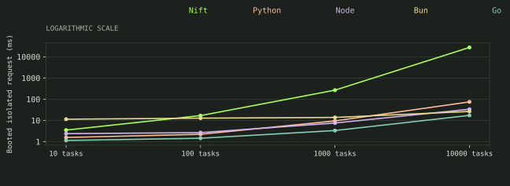
| Workload | Nift | Python | Node | Bun | Go |
|---|---|---|---|---|---|
| 10 tasks | 3.502 | 1.572 | 2.378 | 11.393 | 1.140 |
| 100 tasks | 16.911 | 2.224 | 2.668 | 12.766 | 1.445 |
| 1000 tasks | 267.316 | 9.505 | 7.551 | 13.833 | 3.337 |
| 10000 tasks | 27,511.876 | 74.696 | 33.765 | 26.452 | 17.288 |
| Workload | Nift | Python | Node | Bun | Go |
|---|---|---|---|---|---|
| 10 tasks | 11.213 | 98.013 | 54.104 | 35.332 | 6.471 |
| 100 tasks | 22.406 | 91.547 | 52.277 | 35.271 | 6.270 |
| 1000 tasks | 264.495 | 105.543 | 60.437 | 37.528 | 8.248 |
| 10000 tasks | 27,241.043 | 174.006 | 102.005 | 55.100 | 24.566 |
02 / tiny
Eight exact recurrence iterations per job. Large task sets are expensive stress cells with five samples for every participant.
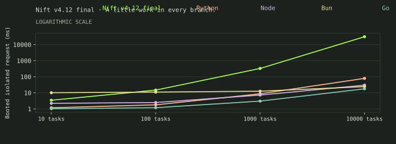
| Workload | Nift | Python | Node | Bun | Go |
|---|---|---|---|---|---|
| 10 tasks | 3.633 | 1.571 | 2.563 | 11.796 | 1.179 |
| 100 tasks | 16.242 | 2.341 | 2.895 | 12.943 | 1.557 |
| 1000 tasks | 277.564 | 12.221 | 8.224 | 15.738 | 3.326 |
| 10000 tasks | 26,505.789 | 84.121 | 32.238 | 26.593 | 20.448 |
| Workload | Nift | Python | Node | Bun | Go |
|---|---|---|---|---|---|
| 10 tasks | 10.738 | 94.817 | 53.682 | 35.104 | 6.548 |
| 100 tasks | 26.408 | 108.390 | 58.606 | 40.312 | 7.620 |
| 1000 tasks | 274.828 | 107.156 | 60.283 | 38.703 | 9.353 |
| 10000 tasks | 27,282.324 | 203.800 | 101.548 | 60.460 | 26.303 |
03 / fan
Every branch has a unique ID. The oracle checks exact values, missing work and duplicate results. This is the same flat create/join shape as tiny arithmetic, retained as a separately sampled fan-out cohort; it does not imply a different executor capability.
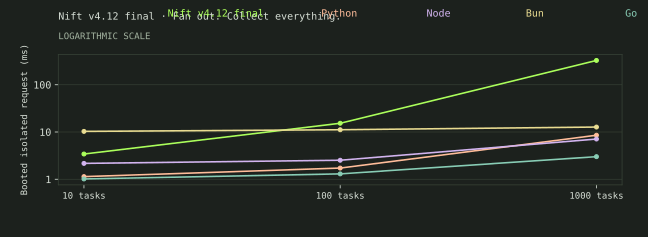
| Workload | Nift | Python | Node | Bun | Go |
|---|---|---|---|---|---|
| 10 tasks | 3.704 | 1.546 | 2.522 | 12.306 | 1.240 |
| 100 tasks | 15.353 | 2.117 | 2.598 | 12.521 | 1.357 |
| 1000 tasks | 266.203 | 10.516 | 7.634 | 13.582 | 3.109 |
| Workload | Nift | Python | Node | Bun | Go |
|---|---|---|---|---|---|
| 10 tasks | 10.220 | 92.118 | 52.304 | 34.618 | 6.429 |
| 100 tasks | 21.550 | 93.492 | 52.485 | 36.045 | 6.764 |
| 1000 tasks | 271.582 | 110.047 | 60.450 | 39.579 | 9.031 |
04 / wait
Nift blocking sleeps occupy native async workers. Event loops suspend promises/tasks and Go suspends goroutines. Equivalent waits do not imply parallel computation. On this four-worker native pool, 1000 × 10ms blocking sleeps have a 2500ms work/worker lower bound; suspended timers have a 10ms critical-path floor before scheduling and result overhead.
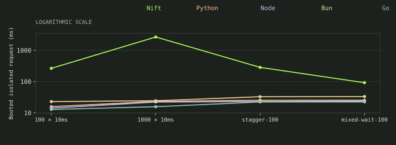
| Workload | Nift | Python | Node | Bun | Go |
|---|---|---|---|---|---|
| 100 × 10ms | 263.893 | 15.785 | 14.054 | 22.795 | 12.766 |
| 1000 × 10ms | 2,659.625 | 23.060 | 22.043 | 24.281 | 15.658 |
| stagger-100 | 283.336 | 25.276 | 22.918 | 32.678 | 22.204 |
| mixed-wait-100 | 91.741 | 25.314 | 23.748 | 33.131 | 22.205 |
| Workload | Nift | Python | Node | Bun | Go |
|---|---|---|---|---|---|
| 100 × 10ms | 271.795 | 114.660 | 65.680 | 48.358 | 16.992 |
| 1000 × 10ms | 2,694.718 | 121.473 | 76.590 | 50.087 | 21.691 |
| stagger-100 | 291.779 | 124.001 | 76.767 | 57.761 | 28.203 |
| mixed-wait-100 | 99.553 | 122.036 | 72.847 | 55.875 | 28.276 |
05 / cpu
The same 64 × 200000-iteration kernel at one, two and four workers. Python uses ordinary-GIL multiprocessing; Node/Bun use worker isolates. Pools are created inside each request.
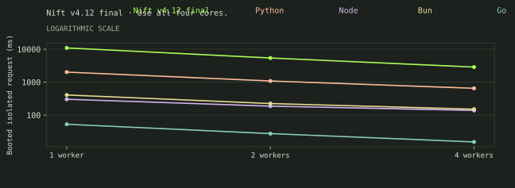
| Workload | Nift | Python | Node | Bun | Go |
|---|---|---|---|---|---|
| 1 worker | 15,425.973 | 2,386.950 | 341.808 | 445.102 | 54.510 |
| 2 workers | 7,254.004 | 1,210.472 | 206.010 | 245.587 | 29.275 |
| 4 workers | 3,905.406 | 763.011 | 144.374 | 162.964 | 15.741 |
| Workload | Nift | Python | Node | Bun | Go |
|---|---|---|---|---|---|
| 1 worker | 14,608.057 | 2,547.447 | 406.473 | 462.426 | 62.056 |
| 2 workers | 7,287.127 | 1,416.899 | 273.554 | 287.456 | 36.762 |
| 4 workers | 3,915.860 | 922.533 | 227.529 | 190.777 | 22.758 |
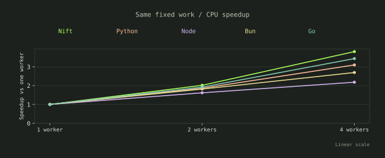
| Workload | Nift | Python | Node | Bun | Go |
|---|---|---|---|---|---|
| 1 worker | 1.000 | 1.000 | 1.000 | 1.000 | 1.000 |
| 2 workers | 2.127 | 1.972 | 1.659 | 1.812 | 1.862 |
| 4 workers | 3.950 | 3.128 | 2.368 | 2.731 | 3.463 |
Four-worker efficiency: Nift 98.7%, Python 78.2%, Node 59.2%, Bun 68.3%, Go 86.6%. Ratios of measured medians, without a significance claim.
06 / pool
One, two or four workers dispatch a fixed 64-job set. Light, medium and heavy bodies reveal the tradeoff between pool setup and useful computation.
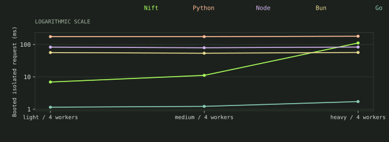
| Workload | Nift | Python | Node | Bun | Go |
|---|---|---|---|---|---|
| light / 4 workers | 6.902 | 174.482 | 82.726 | 56.201 | 1.149 |
| medium / 4 workers | 11.092 | 174.396 | 79.127 | 53.613 | 1.220 |
| heavy / 4 workers | 111.049 | 179.873 | 83.163 | 56.590 | 1.718 |
| Workload | Nift | Python | Node | Bun | Go |
|---|---|---|---|---|---|
| light / 1 workers | 16.488 | 128.925 | 62.067 | 43.261 | 1.072 |
| light / 2 workers | 10.645 | 139.592 | 63.538 | 46.426 | 1.220 |
| light / 4 workers | 6.902 | 174.482 | 82.726 | 56.201 | 1.149 |
| medium / 1 workers | 31.897 | 134.738 | 61.318 | 44.585 | 1.182 |
| medium / 2 workers | 17.576 | 139.931 | 61.123 | 46.609 | 1.193 |
| medium / 4 workers | 11.092 | 174.396 | 79.127 | 53.613 | 1.220 |
| heavy / 1 workers | 360.219 | 170.856 | 69.946 | 53.053 | 2.550 |
| heavy / 2 workers | 190.570 | 169.882 | 74.696 | 55.486 | 1.988 |
| heavy / 4 workers | 111.049 | 179.873 | 83.163 | 56.590 | 1.718 |
| Workload | Nift | Python | Node | Bun | Go |
|---|---|---|---|---|---|
| light / 1 workers | 25.187 | 263.704 | 120.367 | 75.053 | 6.877 |
| light / 2 workers | 17.130 | 248.247 | 117.992 | 71.330 | 6.627 |
| light / 4 workers | 14.541 | 289.609 | 144.415 | 82.577 | 7.439 |
| medium / 1 workers | 36.690 | 246.110 | 114.623 | 68.821 | 6.166 |
| medium / 2 workers | 25.428 | 248.593 | 120.420 | 73.154 | 7.397 |
| medium / 4 workers | 17.988 | 286.503 | 135.365 | 83.285 | 7.341 |
| heavy / 1 workers | 374.196 | 294.417 | 123.449 | 84.881 | 8.598 |
| heavy / 2 workers | 194.045 | 271.223 | 124.560 | 76.217 | 8.124 |
| heavy / 4 workers | 117.665 | 286.872 | 138.906 | 88.133 | 8.586 |
07 / queue
Capacity 64. Go uses channels, Python queue.Queue, JS an authored cooperative promise queue. Nift uses a mutex-protected ring and 1ms empty/full backoff; this is a documented channel/condition-variable gap.
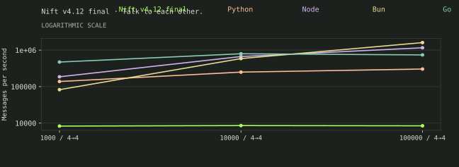
| Workload | Nift | Python | Node | Bun | Go |
|---|---|---|---|---|---|
| 1000 / 4→4 | 2,198.073 | 96,936.797 | 142,551.675 | 74,343.915 | 378,644.453 |
| 10000 / 4→4 | 2,293.137 | 231,497.558 | 572,278.814 | 520,833.333 | 808,342.090 |
| 100000 / 4→4 | 2,191.985 | 258,377.236 | 1,030,195.016 | 1,330,636.577 | 810,865.599 |
| Workload | Nift | Python | Node | Bun | Go |
|---|---|---|---|---|---|
| 1000 / 1→1 | 2,167.848 | 142,470.437 | 126,582.278 | 63,905.930 | 391,083.301 |
| 1000 / 1→4 | 1,947.276 | 110,546.098 | 116,890.707 | 73,572.690 | 437,828.371 |
| 1000 / 4→1 | 1,956.786 | 96,899.225 | 139,004.726 | 70,921.986 | 399,201.597 |
| 1000 / 4→4 | 2,198.073 | 96,936.797 | 142,551.675 | 74,343.915 | 378,644.453 |
| 10000 / 1→1 | 2,567.494 | 317,389.786 | 549,541.133 | 495,540.139 | 796,431.985 |
| 10000 / 1→4 | 1,953.201 | 206,104.825 | 474,721.101 | 404,350.815 | 766,929.979 |
| 10000 / 4→1 | 1,991.986 | 218,804.017 | 485,885.040 | 463,198.851 | 728,013.978 |
| 10000 / 4→4 | 2,293.137 | 231,497.558 | 572,278.814 | 520,833.333 | 808,342.090 |
| 100000 / 1→1 | 2,385.366 | 346,297.560 | 809,539.615 | 1,379,082.083 | 759,768.726 |
| 100000 / 1→4 | 1,881.633 | 256,037.361 | 761,655.229 | 1,253,729.846 | 818,297.124 |
| 100000 / 4→1 | 1,919.805 | 264,226.622 | 815,614.117 | 1,229,014.576 | 816,206.598 |
| 100000 / 4→4 | 2,191.985 | 258,377.236 | 1,030,195.016 | 1,330,636.577 | 810,865.599 |
| Workload | Nift | Python | Node | Bun | Go |
|---|---|---|---|---|---|
| 1000 / 1→1 | 475.301 | 131.573 | 70.833 | 52.663 | 12.549 |
| 1000 / 1→4 | 591.527 | 113.734 | 64.696 | 44.001 | 9.636 |
| 1000 / 4→1 | 489.307 | 105.812 | 61.680 | 40.728 | 8.737 |
| 1000 / 4→4 | 474.916 | 120.645 | 63.945 | 40.999 | 8.730 |
| 10000 / 1→1 | 3,961.919 | 138.206 | 80.592 | 48.902 | 19.847 |
| 10000 / 1→4 | 5,095.886 | 144.673 | 77.710 | 54.316 | 20.970 |
| 10000 / 4→1 | 4,951.985 | 140.226 | 79.845 | 49.233 | 19.705 |
| 10000 / 4→4 | 4,593.155 | 147.192 | 77.615 | 47.215 | 19.887 |
| 100000 / 1→1 | 42,139.649 | 433.035 | 194.510 | 112.068 | 145.470 |
| 100000 / 1→4 | 52,534.894 | 535.465 | 203.560 | 118.705 | 145.929 |
| 100000 / 4→1 | 53,848.599 | 514.745 | 203.049 | 121.749 | 141.861 |
| 100000 / 4→4 | 47,276.732 | 492.179 | 192.697 | 122.841 | 147.903 |
08 / sync
Genuine shared atomics only. Python atomic cells and JS native-mutex cells are unavailable (—). Mutex critical sections contain one or eight increments; all counts are exact.
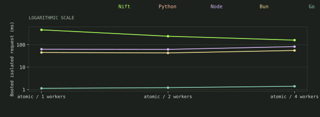
| Workload | Nift | Python | Node | Bun | Go |
|---|---|---|---|---|---|
| atomic / 1 workers | 461.996 | — | 63.044 | 45.099 | 1.133 |
| atomic / 2 workers | 239.459 | — | 61.970 | 43.059 | 1.215 |
| atomic / 4 workers | 160.248 | — | 82.441 | 55.511 | 1.401 |
| Workload | Nift | Python | Node | Bun | Go |
|---|---|---|---|---|---|
| atomic / 1 workers | 461.996 | — | 63.044 | 45.099 | 1.133 |
| atomic / 2 workers | 239.459 | — | 61.970 | 43.059 | 1.215 |
| atomic / 4 workers | 160.248 | — | 82.441 | 55.511 | 1.401 |
| mutex / 1 increments / 1 workers | 651.407 | 4.327 | — | — | 1.253 |
| mutex / 1 increments / 2 workers | 700.684 | 6.028 | — | — | 1.374 |
| mutex / 1 increments / 4 workers | 851.626 | 5.512 | — | — | 1.148 |
| mutex / 8 increments / 1 workers | 747.244 | 6.438 | — | — | 1.129 |
| mutex / 8 increments / 2 workers | 791.154 | 6.992 | — | — | 1.369 |
| mutex / 8 increments / 4 workers | 900.410 | 6.470 | — | — | 1.202 |
| Workload | Nift | Python | Node | Bun | Go |
|---|---|---|---|---|---|
| atomic / 1 workers | 473.330 | — | 120.532 | 72.346 | 9.436 |
| atomic / 2 workers | 272.812 | — | 130.368 | 76.655 | 9.939 |
| atomic / 4 workers | 174.935 | — | 141.469 | 87.834 | 10.861 |
| mutex / 1 increments / 1 workers | 671.583 | 102.693 | — | — | 9.551 |
| mutex / 1 increments / 2 workers | 692.266 | 105.562 | — | — | 9.808 |
| mutex / 1 increments / 4 workers | 897.207 | 115.117 | — | — | 9.708 |
| mutex / 8 increments / 1 workers | 753.812 | 115.924 | — | — | 9.525 |
| mutex / 8 increments / 2 workers | 766.447 | 104.607 | — | — | 10.078 |
| mutex / 8 increments / 4 workers | 928.116 | 112.349 | — | — | 9.673 |
09 / process
Four concurrent argv-launched identical helpers. No shell startup. Every stdout value and expected exit status is checked, including failures.
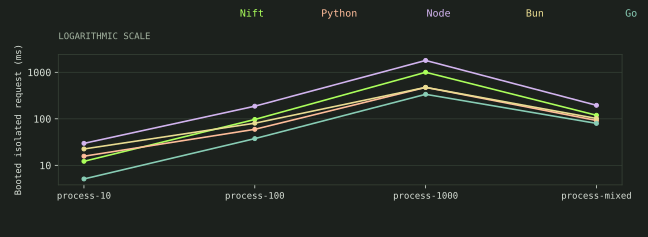
| Workload | Nift | Python | Node | Bun | Go |
|---|---|---|---|---|---|
| process-10 | 11.627 | 18.530 | 31.790 | 26.791 | 7.031 |
| process-100 | 91.162 | 63.008 | 194.861 | 85.156 | 37.845 |
| process-1000 | 902.037 | 453.014 | 1,886.327 | 506.293 | 338.342 |
| process-mixed | 110.845 | 95.802 | 189.358 | 112.324 | 81.257 |
| Workload | Nift | Python | Node | Bun | Go |
|---|---|---|---|---|---|
| process-10 | 11.627 | 18.530 | 31.790 | 26.791 | 7.031 |
| process-100 | 91.162 | 63.008 | 194.861 | 85.156 | 37.845 |
| process-1000 | 902.037 | 453.014 | 1,886.327 | 506.293 | 338.342 |
| process-mixed | 110.845 | 95.802 | 189.358 | 112.324 | 81.257 |
| process-one-failure | 82.619 | 59.411 | 210.022 | 86.078 | 35.169 |
| process-many-failures | 84.664 | 60.512 | 172.513 | 82.333 | 37.448 |
| Workload | Nift | Python | Node | Bun | Go |
|---|---|---|---|---|---|
| process-10 | 20.599 | 117.303 | 91.603 | 56.678 | 12.503 |
| process-100 | 93.137 | 161.075 | 255.046 | 110.725 | 42.691 |
| process-1000 | 909.268 | 564.610 | 1,928.274 | 532.466 | 331.405 |
| process-mixed | 120.736 | 193.792 | 248.414 | 136.659 | 86.749 |
| process-one-failure | 95.537 | 181.945 | 299.683 | 131.420 | 46.597 |
| process-many-failures | 96.989 | 161.005 | 258.728 | 110.189 | 42.091 |
10 / files
Pregenerated 128-byte files, exact byte hashes, four concurrent operations. This is cached runtime/file orchestration, not a disk benchmark.
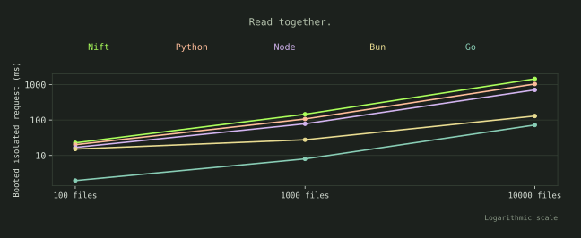
| Workload | Nift | Python | Node | Bun | Go |
|---|---|---|---|---|---|
| 100 files | 17.054 | 22.349 | 15.577 | 16.610 | 1.893 |
| 1000 files | 150.382 | 115.741 | 87.131 | 31.824 | 8.057 |
| 10000 files | 1,448.103 | 985.181 | 680.399 | 130.909 | 69.775 |
| Workload | Nift | Python | Node | Bun | Go |
|---|---|---|---|---|---|
| 100 files | 24.279 | 115.682 | 68.523 | 41.137 | 7.396 |
| 1000 files | 162.225 | 217.303 | 145.197 | 62.033 | 14.905 |
| 10000 files | 1,385.434 | 1,056.793 | 767.869 | 170.462 | 80.794 |
11 / mixed
Mixed jobs combine arithmetic, a wait and a child process. Nested parents create four children. Failures collect all outcomes and let successful siblings finish.
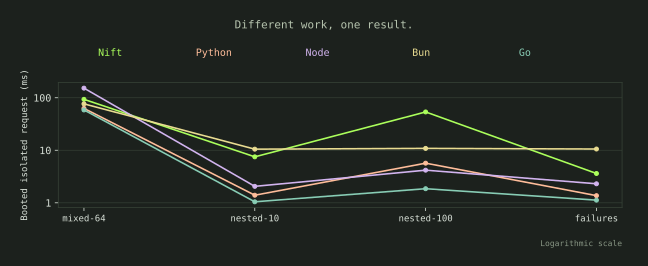
| Workload | Nift | Python | Node | Bun | Go |
|---|---|---|---|---|---|
| mixed-64 | 93.551 | 69.312 | 168.651 | 80.852 | 61.034 |
| nested-10 | 8.821 | 1.989 | 2.469 | 12.498 | 1.283 |
| nested-100 | 62.165 | 7.064 | 5.260 | 12.866 | 2.063 |
| failures | 4.154 | 1.592 | 2.645 | 11.761 | 1.176 |
| Workload | Nift | Python | Node | Bun | Go |
|---|---|---|---|---|---|
| mixed-64 | 100.812 | 179.256 | 228.071 | 116.435 | 69.843 |
| nested-10 | 18.153 | 100.266 | 58.315 | 39.942 | 9.750 |
| nested-100 | 81.891 | 107.596 | 59.794 | 41.629 | 11.875 |
| failures | 17.916 | 110.221 | 66.519 | 46.272 | 11.402 |
12 / memory
All tasks are staged behind a gate while tree RSS is sampled. Nift 10k held tasks are outside the 8GiB host range: a separate local probe used about 13,700MiB (about 13.4GiB); that value is not an official timing or chart point. Queued Nift futures need not have started running. Shared pages may be double-counted; this is not unique physical memory.
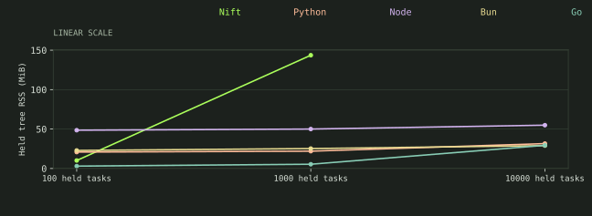
| Workload | Nift | Python | Node | Bun | Go |
|---|---|---|---|---|---|
| 100 held tasks | 10.125 | 20.828 | 48.750 | 23.000 | 3.000 |
| 1000 held tasks | 143.500 | 21.949 | 50.125 | 26.000 | 5.375 |
| 10000 held tasks | — | 31.574 | 55.000 | 29.375 | 29.375 |
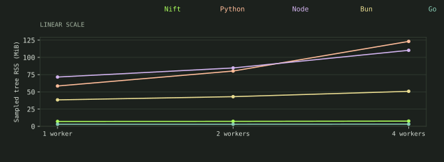
| Workload | Nift | Python | Node | Bun | Go |
|---|---|---|---|---|---|
| 1 worker | 7.125 | 58.523 | 71.500 | 38.426 | 3.125 |
| 2 workers | 7.250 | 80.215 | 84.672 | 43.051 | 3.125 |
| 4 workers | 7.625 | 123.168 | 110.250 | 50.820 | 3.250 |
Median of 5ms sampled peak tree RSS for the fixed CPU workload, separate from the held-task checkpoint above. Shared pages may be double-counted. This does not compare unique physical memory.
Supporting distributions
| Case / boundary / runtime | Median ms | p95 ms | Min–max ms | CPU ms | Sampled tree MiB | n |
|---|---|---|---|---|---|---|
| schedule-10 / persistent / nift | 3.502 | 5.832 | 2.794–8.057 | 0.000 | 6.500 | 50 |
| schedule-10 / persistent / python | 1.572 | 2.258 | 1.213–2.486 | 0.000 | 20.199 | 50 |
| schedule-10 / persistent / node | 2.378 | 3.427 | 1.887–3.678 | 0.000 | 48.625 | 50 |
| schedule-10 / persistent / bun | 11.393 | 14.327 | 10.112–15.065 | 10.000 | 20.625 | 50 |
| schedule-10 / persistent / go | 1.140 | 1.925 | 0.904–3.025 | 0.000 | 2.750 | 50 |
| schedule-100 / persistent / nift | 16.911 | 26.567 | 12.500–37.782 | 40.000 | 8.188 | 50 |
| schedule-100 / persistent / python | 2.224 | 3.211 | 1.657–7.462 | 0.000 | 20.199 | 50 |
| schedule-100 / persistent / node | 2.668 | 3.862 | 2.154–6.148 | 0.000 | 48.625 | 50 |
| schedule-100 / persistent / bun | 12.766 | 15.679 | 9.188–18.559 | 20.000 | 21.875 | 50 |
| schedule-100 / persistent / go | 1.445 | 2.996 | 1.037–3.648 | 0.000 | 2.750 | 50 |
| schedule-1000 / persistent / nift | 267.316 | 392.154 | 216.725–408.590 | 585.000 | 9.486 | 50 |
| schedule-1000 / persistent / python | 9.505 | 12.958 | 8.031–13.914 | 10.000 | 21.762 | 50 |
| schedule-1000 / persistent / node | 7.551 | 11.381 | 5.634–16.101 | 10.000 | 51.336 | 50 |
| schedule-1000 / persistent / bun | 13.833 | 16.170 | 12.212–16.662 | 20.000 | 25.375 | 50 |
| schedule-1000 / persistent / go | 3.337 | 4.903 | 2.309–7.564 | 0.000 | 2.750 | 50 |
| schedule-10000 / persistent / nift | 27,511.876 | 30,894.162 | 25,357.501–30,894.162 | 42,440.000 | 28.285 | 5 |
| schedule-10000 / persistent / python | 74.696 | 86.886 | 65.435–86.886 | 70.000 | 31.188 | 5 |
| schedule-10000 / persistent / node | 33.765 | 38.120 | 23.500–38.120 | 50.000 | 61.250 | 5 |
| schedule-10000 / persistent / bun | 26.452 | 30.042 | 20.783–30.042 | 40.000 | 36.000 | 5 |
| schedule-10000 / persistent / go | 17.288 | 22.873 | 14.637–22.873 | 20.000 | 7.625 | 5 |
| tiny-10 / persistent / nift | 3.633 | 5.562 | 2.780–6.062 | 0.000 | 6.500 | 50 |
| tiny-10 / persistent / python | 1.571 | 2.846 | 1.247–3.217 | 0.000 | 20.201 | 50 |
| tiny-10 / persistent / node | 2.563 | 3.755 | 1.992–3.853 | 0.000 | 48.625 | 50 |
| tiny-10 / persistent / bun | 11.796 | 14.989 | 9.820–19.071 | 10.000 | 20.625 | 50 |
| tiny-10 / persistent / go | 1.179 | 2.182 | 0.941–2.987 | 0.000 | 2.750 | 50 |
| tiny-100 / persistent / nift | 16.242 | 50.928 | 12.660–92.255 | 40.000 | 8.500 | 50 |
| tiny-100 / persistent / python | 2.341 | 4.759 | 1.829–5.687 | 0.000 | 20.199 | 50 |
| tiny-100 / persistent / node | 2.895 | 6.206 | 2.255–33.870 | 0.000 | 48.625 | 50 |
| tiny-100 / persistent / bun | 12.943 | 17.117 | 11.087–44.128 | 20.000 | 21.750 | 50 |
| tiny-100 / persistent / go | 1.557 | 5.061 | 1.058–36.930 | 0.000 | 2.750 | 50 |
| tiny-1000 / persistent / nift | 277.564 | 492.256 | 219.391–904.706 | 620.000 | 9.654 | 50 |
| tiny-1000 / persistent / python | 12.221 | 17.804 | 9.064–44.555 | 10.000 | 21.828 | 50 |
| tiny-1000 / persistent / node | 8.224 | 19.088 | 6.399–42.270 | 10.000 | 51.500 | 50 |
| tiny-1000 / persistent / bun | 15.738 | 21.520 | 10.805–37.305 | 20.000 | 25.438 | 50 |
| tiny-1000 / persistent / go | 3.326 | 7.473 | 2.514–15.956 | 0.000 | 2.750 | 50 |
| tiny-10000 / persistent / nift | 26,505.789 | 28,789.327 | 23,313.646–28,789.327 | 40,720.000 | 26.957 | 5 |
| tiny-10000 / persistent / python | 84.121 | 105.669 | 76.569–105.669 | 90.000 | 31.188 | 5 |
| tiny-10000 / persistent / node | 32.238 | 36.986 | 30.336–36.986 | 40.000 | 61.875 | 5 |
| tiny-10000 / persistent / bun | 26.593 | 34.471 | 22.830–34.471 | 50.000 | 35.750 | 5 |
| tiny-10000 / persistent / go | 20.448 | 26.715 | 16.035–26.715 | 20.000 | 7.500 | 5 |
| fan-10 / persistent / nift | 3.704 | 25.508 | 2.662–56.907 | 0.000 | 6.500 | 50 |
| fan-10 / persistent / python | 1.546 | 4.805 | 1.192–18.498 | 0.000 | 20.199 | 50 |
| fan-10 / persistent / node | 2.522 | 11.927 | 1.953–38.902 | 10.000 | 48.625 | 50 |
| fan-10 / persistent / bun | 12.306 | 42.776 | 9.869–75.734 | 10.000 | 20.750 | 50 |
| fan-10 / persistent / go | 1.240 | 2.346 | 0.857–11.365 | 0.000 | 2.750 | 50 |
| fan-100 / persistent / nift | 15.353 | 24.281 | 12.648–34.475 | 40.000 | 8.250 | 50 |
| fan-100 / persistent / python | 2.117 | 2.806 | 1.717–3.974 | 0.000 | 20.199 | 50 |
| fan-100 / persistent / node | 2.598 | 3.463 | 2.194–4.105 | 0.000 | 48.625 | 50 |
| fan-100 / persistent / bun | 12.521 | 15.770 | 10.650–15.961 | 20.000 | 21.125 | 50 |
| fan-100 / persistent / go | 1.357 | 2.366 | 1.096–6.962 | 0.000 | 2.750 | 50 |
| fan-1000 / persistent / nift | 266.203 | 322.282 | 209.430–343.578 | 585.000 | 9.750 | 50 |
| fan-1000 / persistent / python | 10.516 | 13.832 | 9.350–16.581 | 10.000 | 21.824 | 50 |
| fan-1000 / persistent / node | 7.634 | 10.793 | 6.684–12.238 | 10.000 | 51.586 | 50 |
| fan-1000 / persistent / bun | 13.582 | 18.593 | 11.975–19.006 | 20.000 | 26.188 | 50 |
| fan-1000 / persistent / go | 3.109 | 4.401 | 2.462–5.465 | 0.000 | 2.750 | 50 |
| wait-100 / persistent / nift | 263.893 | 330.448 | 260.425–347.563 | 50.000 | 10.250 | 20 |
| wait-100 / persistent / python | 15.785 | 34.992 | 13.960–36.991 | 10.000 | 21.199 | 20 |
| wait-100 / persistent / node | 14.054 | 21.200 | 13.294–32.990 | 10.000 | 49.797 | 20 |
| wait-100 / persistent / bun | 22.795 | 56.052 | 21.023–56.215 | 20.000 | 25.812 | 20 |
| wait-100 / persistent / go | 12.766 | 18.252 | 11.936–27.474 | 0.000 | 3.188 | 20 |
| wait-1000 / persistent / nift | 2,659.625 | 2,700.077 | 2,649.317–2,980.836 | 870.000 | 140.750 | 20 |
| wait-1000 / persistent / python | 23.060 | 26.503 | 20.802–41.580 | 20.000 | 22.699 | 20 |
| wait-1000 / persistent / node | 22.043 | 28.202 | 18.535–50.961 | 30.000 | 53.301 | 20 |
| wait-1000 / persistent / bun | 24.281 | 28.631 | 22.367–30.899 | 30.000 | 27.625 | 20 |
| wait-1000 / persistent / go | 15.658 | 16.885 | 14.677–16.915 | 0.000 | 5.500 | 20 |
| stagger-100 / persistent / nift | 283.336 | 287.015 | 281.961–287.086 | 50.000 | 10.125 | 20 |
| stagger-100 / persistent / python | 25.276 | 26.616 | 24.026–26.724 | 10.000 | 21.203 | 20 |
| stagger-100 / persistent / node | 22.918 | 23.697 | 21.882–24.082 | 10.000 | 49.922 | 20 |
| stagger-100 / persistent / bun | 32.678 | 34.311 | 31.419–36.556 | 20.000 | 24.125 | 20 |
| stagger-100 / persistent / go | 22.204 | 23.272 | 21.588–23.789 | 0.000 | 3.000 | 20 |
| mixed-wait-100 / persistent / nift | 91.741 | 142.369 | 89.683–172.070 | 40.000 | 10.000 | 20 |
| mixed-wait-100 / persistent / python | 25.314 | 39.138 | 23.894–43.047 | 5.000 | 21.199 | 20 |
| mixed-wait-100 / persistent / node | 23.748 | 27.836 | 22.493–33.303 | 10.000 | 49.875 | 20 |
| mixed-wait-100 / persistent / bun | 33.131 | 46.348 | 30.962–67.736 | 20.000 | 24.188 | 20 |
| mixed-wait-100 / persistent / go | 22.205 | 26.224 | 21.725–30.368 | 0.000 | 3.000 | 20 |
| pool-light-1 / persistent / nift | 16.488 | 22.073 | 14.875–24.194 | 10.000 | 7.000 | 20 |
| pool-light-1 / persistent / python | 128.925 | 143.809 | 115.884–147.496 | 130.000 | 58.275 | 20 |
| pool-light-1 / persistent / node | 62.067 | 70.222 | 55.039–70.464 | 70.000 | 65.398 | 20 |
| pool-light-1 / persistent / bun | 43.261 | 54.166 | 36.482–61.025 | 50.000 | 32.250 | 20 |
| pool-light-1 / persistent / go | 1.072 | 1.629 | 0.835–1.825 | 0.000 | 2.750 | 20 |
| pool-light-2 / persistent / nift | 10.645 | 12.213 | 8.719–12.416 | 10.000 | 7.125 | 20 |
| pool-light-2 / persistent / python | 139.592 | 160.777 | 129.145–166.031 | 250.000 | 80.158 | 20 |
| pool-light-2 / persistent / node | 63.538 | 73.068 | 57.502–75.374 | 130.000 | 77.586 | 20 |
| pool-light-2 / persistent / bun | 46.426 | 54.732 | 42.043–54.753 | 85.000 | 37.178 | 20 |
| pool-light-2 / persistent / go | 1.220 | 1.635 | 0.902–1.738 | 0.000 | 2.750 | 20 |
| pool-light-4 / persistent / nift | 6.902 | 13.229 | 6.173–24.595 | 20.000 | 7.500 | 20 |
| pool-light-4 / persistent / python | 174.482 | 193.036 | 154.509–236.726 | 510.000 | 122.877 | 20 |
| pool-light-4 / persistent / node | 82.726 | 142.314 | 72.168–144.263 | 255.000 | 100.273 | 20 |
| pool-light-4 / persistent / bun | 56.201 | 76.598 | 50.434–116.318 | 155.000 | 46.848 | 20 |
| pool-light-4 / persistent / go | 1.149 | 2.682 | 0.953–4.952 | 0.000 | 2.750 | 20 |
| pool-medium-1 / persistent / nift | 31.897 | 36.579 | 27.676–37.367 | 30.000 | 7.000 | 20 |
| pool-medium-1 / persistent / python | 134.738 | 160.284 | 115.995–177.295 | 130.000 | 58.461 | 20 |
| pool-medium-1 / persistent / node | 61.318 | 68.977 | 55.310–74.365 | 70.000 | 65.461 | 20 |
| pool-medium-1 / persistent / bun | 44.585 | 49.695 | 38.916–49.887 | 50.000 | 34.125 | 20 |
| pool-medium-1 / persistent / go | 1.182 | 1.383 | 0.978–1.799 | 0.000 | 2.750 | 20 |
| pool-medium-2 / persistent / nift | 17.576 | 22.796 | 14.657–23.279 | 30.000 | 7.125 | 20 |
| pool-medium-2 / persistent / python | 139.931 | 163.322 | 126.441–172.287 | 255.000 | 79.979 | 20 |
| pool-medium-2 / persistent / node | 61.123 | 78.086 | 56.127–81.723 | 130.000 | 77.852 | 20 |
| pool-medium-2 / persistent / bun | 46.609 | 55.831 | 40.871–57.499 | 85.000 | 38.791 | 20 |
| pool-medium-2 / persistent / go | 1.193 | 1.479 | 1.009–1.565 | 0.000 | 2.750 | 20 |
| pool-medium-4 / persistent / nift | 11.092 | 12.950 | 9.915–15.219 | 30.000 | 7.500 | 20 |
| pool-medium-4 / persistent / python | 174.396 | 200.964 | 152.765–205.303 | 515.000 | 121.756 | 20 |
| pool-medium-4 / persistent / node | 79.127 | 86.728 | 69.794–88.564 | 255.000 | 101.148 | 20 |
| pool-medium-4 / persistent / bun | 53.613 | 60.270 | 47.622–62.640 | 150.000 | 48.518 | 20 |
| pool-medium-4 / persistent / go | 1.220 | 1.838 | 1.013–2.589 | 0.000 | 2.750 | 20 |
| pool-heavy-1 / persistent / nift | 360.219 | 379.126 | 341.473–379.126 | 355.000 | 7.000 | 10 |
| pool-heavy-1 / persistent / python | 170.856 | 187.325 | 161.225–187.325 | 185.000 | 58.525 | 10 |
| pool-heavy-1 / persistent / node | 69.946 | 73.748 | 62.319–73.748 | 80.000 | 71.422 | 10 |
| pool-heavy-1 / persistent / bun | 53.053 | 64.599 | 50.029–64.599 | 70.000 | 35.812 | 10 |
| pool-heavy-1 / persistent / go | 2.550 | 3.461 | 2.277–3.461 | 0.000 | 2.750 | 10 |
| pool-heavy-2 / persistent / nift | 190.570 | 262.737 | 172.621–262.737 | 370.000 | 7.250 | 10 |
| pool-heavy-2 / persistent / python | 169.882 | 265.653 | 147.792–265.653 | 320.000 | 79.973 | 10 |
| pool-heavy-2 / persistent / node | 74.696 | 80.867 | 69.124–80.867 | 155.000 | 84.273 | 10 |
| pool-heavy-2 / persistent / bun | 55.486 | 60.203 | 48.779–60.203 | 100.000 | 40.932 | 10 |
| pool-heavy-2 / persistent / go | 1.988 | 2.263 | 1.763–2.263 | 0.000 | 2.750 | 10 |
| pool-heavy-4 / persistent / nift | 111.049 | 119.990 | 95.854–119.990 | 415.000 | 7.562 | 10 |
| pool-heavy-4 / persistent / python | 179.873 | 194.437 | 170.030–194.437 | 565.000 | 123.020 | 10 |
| pool-heavy-4 / persistent / node | 83.163 | 87.840 | 75.159–87.840 | 260.000 | 108.836 | 10 |
| pool-heavy-4 / persistent / bun | 56.590 | 62.524 | 54.515–62.524 | 170.000 | 50.576 | 10 |
| pool-heavy-4 / persistent / go | 1.718 | 1.930 | 1.373–1.930 | 0.000 | 2.750 | 10 |
| cpu-1 / persistent / nift | 15,425.973 | 16,854.204 | 14,675.914–16,854.204 | 15,420.000 | 7.125 | 5 |
| cpu-1 / persistent / python | 2,386.950 | 2,529.551 | 2,213.681–2,529.551 | 2,420.000 | 58.523 | 5 |
| cpu-1 / persistent / node | 341.808 | 515.245 | 333.788–515.245 | 380.000 | 71.500 | 5 |
| cpu-1 / persistent / bun | 445.102 | 515.431 | 410.786–515.431 | 460.000 | 38.426 | 5 |
| cpu-1 / persistent / go | 54.510 | 60.580 | 52.599–60.580 | 50.000 | 3.125 | 5 |
| cpu-2 / persistent / nift | 7,254.004 | 7,312.966 | 7,005.681–7,312.966 | 14,420.000 | 7.250 | 5 |
| cpu-2 / persistent / python | 1,210.472 | 1,241.562 | 1,183.454–1,241.562 | 2,400.000 | 80.215 | 5 |
| cpu-2 / persistent / node | 206.010 | 215.227 | 182.999–215.227 | 420.000 | 84.672 | 5 |
| cpu-2 / persistent / bun | 245.587 | 252.378 | 230.915–252.378 | 490.000 | 43.051 | 5 |
| cpu-2 / persistent / go | 29.275 | 108.036 | 28.279–108.036 | 50.000 | 3.125 | 5 |
| cpu-4 / persistent / nift | 3,905.406 | 4,281.554 | 3,644.780–4,281.554 | 14,840.000 | 7.625 | 5 |
| cpu-4 / persistent / python | 763.011 | 845.028 | 739.614–845.028 | 2,800.000 | 123.168 | 5 |
| cpu-4 / persistent / node | 144.374 | 164.077 | 140.647–164.077 | 510.000 | 110.250 | 5 |
| cpu-4 / persistent / bun | 162.964 | 170.865 | 154.829–170.865 | 560.000 | 50.820 | 5 |
| cpu-4 / persistent / go | 15.741 | 16.117 | 15.127–16.117 | 50.000 | 3.250 | 5 |
| process-10 / persistent / nift | 11.627 | 19.981 | 9.547–19.981 | 20.000 | 9.062 | 10 |
| process-10 / persistent / python | 18.530 | 22.386 | 15.361–22.386 | 15.000 | 42.969 | 10 |
| process-10 / persistent / node | 31.790 | 34.477 | 27.519–34.477 | 40.000 | 51.148 | 10 |
| process-10 / persistent / bun | 26.791 | 37.181 | 22.814–37.181 | 30.000 | 26.438 | 10 |
| process-10 / persistent / go | 7.031 | 10.386 | 4.715–10.386 | 0.000 | 2.750 | 10 |
| process-100 / persistent / nift | 91.162 | 100.977 | 76.749–100.977 | 245.000 | 11.016 | 10 |
| process-100 / persistent / python | 63.008 | 79.803 | 56.078–79.803 | 140.000 | 44.711 | 10 |
| process-100 / persistent / node | 194.861 | 261.988 | 184.691–261.988 | 280.000 | 56.842 | 10 |
| process-100 / persistent / bun | 85.156 | 99.589 | 76.398–99.589 | 180.000 | 38.865 | 10 |
| process-100 / persistent / go | 37.845 | 46.455 | 34.181–46.455 | 90.000 | 8.125 | 10 |
| process-1000 / persistent / nift | 902.037 | 1,023.219 | 851.869–1,023.219 | 2,630.000 | 12.746 | 10 |
| process-1000 / persistent / python | 453.014 | 510.522 | 405.456–510.522 | 1,295.000 | 71.541 | 10 |
| process-1000 / persistent / node | 1,886.327 | 2,619.966 | 1,679.678–2,619.966 | 2,720.000 | 76.545 | 10 |
| process-1000 / persistent / bun | 506.293 | 2,706.523 | 466.617–2,706.523 | 1,245.000 | 102.770 | 10 |
| process-1000 / persistent / go | 338.342 | 371.369 | 317.892–371.369 | 1,035.000 | 21.000 | 10 |
| process-mixed / persistent / nift | 110.845 | 121.756 | 104.967–121.756 | 190.000 | 12.467 | 10 |
| process-mixed / persistent / python | 95.802 | 99.470 | 92.899–99.470 | 130.000 | 45.398 | 10 |
| process-mixed / persistent / node | 189.358 | 233.864 | 170.252–233.864 | 265.000 | 56.336 | 10 |
| process-mixed / persistent / bun | 112.324 | 128.173 | 103.701–128.173 | 185.000 | 42.062 | 10 |
| process-mixed / persistent / go | 81.257 | 88.099 | 78.232–88.099 | 105.000 | 9.000 | 10 |
| process-one-failure / persistent / nift | 82.619 | 92.250 | 75.192–92.250 | 220.000 | 10.938 | 10 |
| process-one-failure / persistent / python | 59.411 | 69.764 | 50.584–69.764 | 135.000 | 44.219 | 10 |
| process-one-failure / persistent / node | 210.022 | 268.198 | 178.372–268.198 | 300.000 | 55.047 | 10 |
| process-one-failure / persistent / bun | 86.078 | 95.499 | 73.473–95.499 | 175.000 | 67.938 | 10 |
| process-one-failure / persistent / go | 35.169 | 42.108 | 33.896–42.108 | 90.000 | 7.750 | 10 |
| process-many-failures / persistent / nift | 84.664 | 97.514 | 77.465–97.514 | 230.000 | 11.119 | 10 |
| process-many-failures / persistent / python | 60.512 | 74.983 | 54.960–74.983 | 140.000 | 44.340 | 10 |
| process-many-failures / persistent / node | 172.513 | 239.095 | 164.349–239.095 | 255.000 | 55.148 | 10 |
| process-many-failures / persistent / bun | 82.333 | 104.383 | 75.136–104.383 | 170.000 | 42.938 | 10 |
| process-many-failures / persistent / go | 37.448 | 39.985 | 33.151–39.985 | 100.000 | 8.250 | 10 |
| files-100 / persistent / nift | 17.054 | 21.442 | 14.319–21.442 | 60.000 | 7.875 | 10 |
| files-100 / persistent / python | 22.349 | 32.415 | 18.744–32.415 | 30.000 | 21.576 | 10 |
| files-100 / persistent / node | 15.577 | 22.124 | 13.294–22.124 | 20.000 | 51.250 | 10 |
| files-100 / persistent / bun | 16.610 | 19.774 | 14.290–19.774 | 20.000 | 26.875 | 10 |
| files-100 / persistent / go | 1.893 | 3.226 | 1.595–3.226 | 0.000 | 2.750 | 10 |
| files-1000 / persistent / nift | 150.382 | 169.316 | 136.411–169.316 | 570.000 | 9.574 | 10 |
| files-1000 / persistent / python | 115.741 | 133.282 | 93.787–133.282 | 165.000 | 23.391 | 10 |
| files-1000 / persistent / node | 87.131 | 127.663 | 74.462–127.663 | 145.000 | 53.625 | 10 |
| files-1000 / persistent / bun | 31.824 | 40.367 | 25.678–40.367 | 65.000 | 35.062 | 10 |
| files-1000 / persistent / go | 8.057 | 9.837 | 6.505–9.837 | 10.000 | 3.875 | 10 |
| files-10000 / persistent / nift | 1,448.103 | 1,678.533 | 1,317.168–1,678.533 | 5,575.000 | 35.221 | 10 |
| files-10000 / persistent / python | 985.181 | 1,084.452 | 919.349–1,084.452 | 1,520.000 | 41.703 | 10 |
| files-10000 / persistent / node | 680.399 | 866.800 | 659.887–866.800 | 1,285.000 | 64.211 | 10 |
| files-10000 / persistent / bun | 130.909 | 721.654 | 122.400–721.654 | 295.000 | 43.430 | 10 |
| files-10000 / persistent / go | 69.775 | 315.239 | 58.308–315.239 | 170.000 | 8.551 | 10 |
| queue-1000-1-1 / persistent / nift | 461.287 | 515.139 | 385.341–515.139 | 575.000 | 8.312 | 10 |
| queue-1000-1-1 / persistent / python | 7.019 | 17.881 | 6.177–17.881 | 10.000 | 20.453 | 10 |
| queue-1000-1-1 / persistent / node | 7.900 | 17.220 | 5.738–17.220 | 10.000 | 49.688 | 10 |
| queue-1000-1-1 / persistent / bun | 15.648 | 19.667 | 11.403–19.667 | 20.000 | 21.188 | 10 |
| queue-1000-1-1 / persistent / go | 2.557 | 3.679 | 1.981–3.679 | 0.000 | 2.750 | 10 |
| queue-1000-1-4 / persistent / nift | 513.538 | 534.162 | 473.278–534.162 | 680.000 | 9.125 | 10 |
| queue-1000-1-4 / persistent / python | 9.046 | 9.909 | 7.412–9.909 | 10.000 | 20.324 | 10 |
| queue-1000-1-4 / persistent / node | 8.555 | 10.407 | 5.632–10.407 | 10.000 | 50.438 | 10 |
| queue-1000-1-4 / persistent / bun | 13.592 | 17.837 | 12.078–17.837 | 20.000 | 24.188 | 10 |
| queue-1000-1-4 / persistent / go | 2.284 | 2.798 | 2.014–2.798 | 0.000 | 2.750 | 10 |
| queue-1000-4-1 / persistent / nift | 511.042 | 1,163.327 | 482.054–1,163.327 | 655.000 | 9.414 | 10 |
| queue-1000-4-1 / persistent / python | 10.320 | 26.831 | 7.589–26.831 | 10.000 | 20.449 | 10 |
| queue-1000-4-1 / persistent / node | 7.194 | 20.817 | 5.772–20.817 | 10.000 | 50.711 | 10 |
| queue-1000-4-1 / persistent / bun | 14.100 | 16.885 | 12.772–16.885 | 20.000 | 23.438 | 10 |
| queue-1000-4-1 / persistent / go | 2.505 | 6.765 | 1.720–6.765 | 0.000 | 2.750 | 10 |
| queue-1000-4-4 / persistent / nift | 454.944 | 600.959 | 418.084–600.959 | 560.000 | 9.438 | 10 |
| queue-1000-4-4 / persistent / python | 10.316 | 19.789 | 8.428–19.789 | 10.000 | 20.451 | 10 |
| queue-1000-4-4 / persistent / node | 7.015 | 8.974 | 5.476–8.974 | 10.000 | 51.023 | 10 |
| queue-1000-4-4 / persistent / bun | 13.451 | 20.287 | 12.603–20.287 | 20.000 | 22.500 | 10 |
| queue-1000-4-4 / persistent / go | 2.641 | 4.952 | 1.938–4.952 | 0.000 | 2.750 | 10 |
| queue-10000-1-1 / persistent / nift | 3,894.848 | 4,299.862 | 3,616.116–4,299.862 | 4,930.000 | 25.646 | 10 |
| queue-10000-1-1 / persistent / python | 31.507 | 42.411 | 27.154–42.411 | 40.000 | 21.828 | 10 |
| queue-10000-1-1 / persistent / node | 18.197 | 20.951 | 13.803–20.951 | 20.000 | 54.148 | 10 |
| queue-10000-1-1 / persistent / bun | 20.180 | 22.693 | 16.904–22.693 | 40.000 | 30.688 | 10 |
| queue-10000-1-1 / persistent / go | 12.556 | 15.078 | 10.849–15.078 | 10.000 | 5.062 | 10 |
| queue-10000-1-4 / persistent / nift | 5,119.801 | 7,166.857 | 4,806.183–7,166.857 | 6,790.000 | 26.004 | 10 |
| queue-10000-1-4 / persistent / python | 48.519 | 66.301 | 42.417–66.301 | 55.000 | 21.643 | 10 |
| queue-10000-1-4 / persistent / node | 21.065 | 36.350 | 16.368–36.350 | 30.000 | 54.750 | 10 |
| queue-10000-1-4 / persistent / bun | 24.731 | 27.203 | 20.716–27.203 | 50.000 | 37.812 | 10 |
| queue-10000-1-4 / persistent / go | 13.039 | 15.302 | 12.044–15.302 | 10.000 | 5.562 | 10 |
| queue-10000-4-1 / persistent / nift | 5,020.116 | 7,743.125 | 4,789.977–7,743.125 | 6,530.000 | 26.348 | 10 |
| queue-10000-4-1 / persistent / python | 45.703 | 53.925 | 38.214–53.925 | 50.000 | 21.824 | 10 |
| queue-10000-4-1 / persistent / node | 20.581 | 27.255 | 15.549–27.255 | 30.000 | 54.148 | 10 |
| queue-10000-4-1 / persistent / bun | 21.589 | 27.496 | 19.515–27.496 | 45.000 | 34.625 | 10 |
| queue-10000-4-1 / persistent / go | 13.736 | 16.859 | 11.297–16.859 | 10.000 | 5.375 | 10 |
| queue-10000-4-4 / persistent / nift | 4,360.838 | 4,869.751 | 4,166.276–4,869.751 | 5,400.000 | 25.854 | 10 |
| queue-10000-4-4 / persistent / python | 43.197 | 61.179 | 37.038–61.179 | 40.000 | 21.824 | 10 |
| queue-10000-4-4 / persistent / node | 17.474 | 24.479 | 13.382–24.479 | 20.000 | 53.961 | 10 |
| queue-10000-4-4 / persistent / bun | 19.200 | 21.063 | 16.908–21.063 | 40.000 | 29.062 | 10 |
| queue-10000-4-4 / persistent / go | 12.371 | 14.887 | 11.771–14.887 | 10.000 | 5.438 | 10 |
| queue-100000-1-1 / persistent / nift | 41,922.289 | 42,567.321 | 40,315.885–42,567.321 | 52,610.000 | 181.609 | 5 |
| queue-100000-1-1 / persistent / python | 288.769 | 318.703 | 277.434–318.703 | 320.000 | 37.141 | 5 |
| queue-100000-1-1 / persistent / node | 123.527 | 132.397 | 108.923–132.397 | 170.000 | 85.371 | 5 |
| queue-100000-1-1 / persistent / bun | 72.512 | 83.601 | 71.711–83.601 | 110.000 | 49.375 | 5 |
| queue-100000-1-1 / persistent / go | 131.619 | 137.025 | 116.836–137.025 | 160.000 | 21.000 | 5 |
| queue-100000-1-4 / persistent / nift | 53,145.334 | 54,805.512 | 52,741.170–54,805.512 | 70,870.000 | 187.156 | 5 |
| queue-100000-1-4 / persistent / python | 390.568 | 414.381 | 369.939–414.381 | 440.000 | 37.199 | 5 |
| queue-100000-1-4 / persistent / node | 131.293 | 172.211 | 123.051–172.211 | 200.000 | 88.039 | 5 |
| queue-100000-1-4 / persistent / bun | 79.762 | 91.723 | 75.136–91.723 | 110.000 | 50.000 | 5 |
| queue-100000-1-4 / persistent / go | 122.205 | 171.132 | 118.344–171.132 | 160.000 | 21.125 | 5 |
| queue-100000-4-1 / persistent / nift | 52,088.629 | 54,412.063 | 50,116.167–54,412.063 | 67,620.000 | 185.727 | 5 |
| queue-100000-4-1 / persistent / python | 378.463 | 393.633 | 362.707–393.633 | 420.000 | 37.117 | 5 |
| queue-100000-4-1 / persistent / node | 122.607 | 127.781 | 111.280–127.781 | 180.000 | 85.621 | 5 |
| queue-100000-4-1 / persistent / bun | 81.366 | 95.439 | 71.495–95.439 | 120.000 | 49.625 | 5 |
| queue-100000-4-1 / persistent / go | 122.518 | 133.541 | 118.960–133.541 | 160.000 | 21.863 | 5 |
| queue-100000-4-4 / persistent / nift | 45,620.753 | 46,743.101 | 45,057.106–46,743.101 | 56,610.000 | 184.527 | 5 |
| queue-100000-4-4 / persistent / python | 387.031 | 865.171 | 344.868–865.171 | 420.000 | 37.203 | 5 |
| queue-100000-4-4 / persistent / node | 97.069 | 152.199 | 81.446–152.199 | 140.000 | 86.363 | 5 |
| queue-100000-4-4 / persistent / bun | 75.152 | 245.114 | 66.937–245.114 | 110.000 | 49.250 | 5 |
| queue-100000-4-4 / persistent / go | 123.325 | 256.904 | 120.257–256.904 | 180.000 | 21.000 | 5 |
| atomic-1 / persistent / nift | 461.996 | 514.403 | 418.850–514.403 | 460.000 | 7.125 | 10 |
| atomic-1 / persistent / node | 63.044 | 72.357 | 53.956–72.357 | 70.000 | 64.500 | 10 |
| atomic-1 / persistent / bun | 45.099 | 53.345 | 37.860–53.345 | 50.000 | 34.875 | 10 |
| atomic-1 / persistent / go | 1.133 | 2.287 | 0.895–2.287 | 0.000 | 2.688 | 10 |
| mutex-1-1 / persistent / nift | 651.407 | 1,594.889 | 618.111–1,594.889 | 645.000 | 7.125 | 10 |
| mutex-1-1 / persistent / python | 4.327 | 25.137 | 3.474–25.137 | 0.000 | 20.199 | 10 |
| mutex-1-1 / persistent / go | 1.253 | 10.476 | 0.978–10.476 | 0.000 | 2.750 | 10 |
| mutex-8-1 / persistent / nift | 747.244 | 825.411 | 680.461–825.411 | 750.000 | 7.125 | 10 |
| mutex-8-1 / persistent / python | 6.438 | 8.603 | 5.220–8.603 | 10.000 | 20.201 | 10 |
| mutex-8-1 / persistent / go | 1.129 | 1.977 | 0.872–1.977 | 0.000 | 2.688 | 10 |
| atomic-2 / persistent / nift | 239.459 | 266.967 | 219.954–266.967 | 445.000 | 7.125 | 10 |
| atomic-2 / persistent / node | 61.970 | 66.082 | 53.054–66.082 | 125.000 | 76.875 | 10 |
| atomic-2 / persistent / bun | 43.059 | 54.444 | 37.859–54.444 | 80.000 | 38.221 | 10 |
| atomic-2 / persistent / go | 1.215 | 1.650 | 0.957–1.650 | 0.000 | 2.750 | 10 |
| mutex-1-2 / persistent / nift | 700.684 | 1,221.322 | 642.435–1,221.322 | 940.000 | 7.375 | 10 |
| mutex-1-2 / persistent / python | 6.028 | 44.717 | 3.622–44.717 | 5.000 | 20.201 | 10 |
| mutex-1-2 / persistent / go | 1.374 | 5.792 | 1.013–5.792 | 0.000 | 2.750 | 10 |
| mutex-8-2 / persistent / nift | 791.154 | 900.146 | 707.157–900.146 | 1,040.000 | 7.125 | 10 |
| mutex-8-2 / persistent / python | 6.992 | 8.566 | 6.267–8.566 | 0.000 | 20.326 | 10 |
| mutex-8-2 / persistent / go | 1.369 | 1.822 | 1.011–1.822 | 0.000 | 2.625 | 10 |
| atomic-4 / persistent / nift | 160.248 | 177.675 | 144.586–177.675 | 540.000 | 7.500 | 10 |
| atomic-4 / persistent / node | 82.441 | 105.909 | 77.904–105.909 | 260.000 | 98.273 | 10 |
| atomic-4 / persistent / bun | 55.511 | 65.939 | 51.162–65.939 | 155.000 | 46.855 | 10 |
| atomic-4 / persistent / go | 1.401 | 1.851 | 1.031–1.851 | 0.000 | 2.688 | 10 |
| mutex-1-4 / persistent / nift | 851.626 | 900.962 | 749.614–900.962 | 1,090.000 | 7.500 | 10 |
| mutex-1-4 / persistent / python | 5.512 | 9.384 | 4.513–9.384 | 10.000 | 20.199 | 10 |
| mutex-1-4 / persistent / go | 1.148 | 1.703 | 0.976–1.703 | 0.000 | 2.688 | 10 |
| mutex-8-4 / persistent / nift | 900.410 | 985.329 | 785.718–985.329 | 1,135.000 | 7.562 | 10 |
| mutex-8-4 / persistent / python | 6.470 | 12.717 | 5.788–12.717 | 5.000 | 20.445 | 10 |
| mutex-8-4 / persistent / go | 1.202 | 1.866 | 1.005–1.866 | 0.000 | 2.750 | 10 |
| failures / persistent / nift | 4.154 | 5.623 | 3.078–5.623 | 0.000 | 6.438 | 10 |
| failures / persistent / python | 1.592 | 3.838 | 1.282–3.838 | 0.000 | 20.199 | 10 |
| failures / persistent / node | 2.645 | 3.804 | 2.158–3.804 | 0.000 | 48.586 | 10 |
| failures / persistent / bun | 11.761 | 18.240 | 10.132–18.240 | 20.000 | 20.562 | 10 |
| failures / persistent / go | 1.176 | 2.377 | 0.981–2.377 | 0.000 | 2.750 | 10 |
| mixed-64 / persistent / nift | 93.551 | 105.855 | 85.352–105.855 | 170.000 | 10.688 | 10 |
| mixed-64 / persistent / python | 69.312 | 81.978 | 63.808–81.978 | 90.000 | 43.652 | 10 |
| mixed-64 / persistent / node | 168.651 | 217.619 | 147.328–217.619 | 200.000 | 54.586 | 10 |
| mixed-64 / persistent / bun | 80.852 | 97.396 | 73.752–97.396 | 125.000 | 36.500 | 10 |
| mixed-64 / persistent / go | 61.034 | 67.535 | 56.270–67.535 | 60.000 | 7.250 | 10 |
| nested-10 / persistent / nift | 8.821 | 10.295 | 7.338–10.582 | 20.000 | 8.625 | 20 |
| nested-10 / persistent / python | 1.989 | 2.478 | 1.496–2.956 | 0.000 | 20.199 | 20 |
| nested-10 / persistent / node | 2.469 | 3.113 | 1.790–3.460 | 0.000 | 48.625 | 20 |
| nested-10 / persistent / bun | 12.498 | 14.724 | 10.507–15.495 | 10.000 | 20.625 | 20 |
| nested-10 / persistent / go | 1.283 | 1.712 | 0.972–4.905 | 0.000 | 2.750 | 20 |
| nested-100 / persistent / nift | 62.165 | 79.976 | 55.213–82.275 | 215.000 | 23.375 | 20 |
| nested-100 / persistent / python | 7.064 | 9.212 | 6.299–11.814 | 10.000 | 21.447 | 20 |
| nested-100 / persistent / node | 5.260 | 7.876 | 4.040–8.838 | 10.000 | 48.750 | 20 |
| nested-100 / persistent / bun | 12.866 | 16.349 | 11.479–17.093 | 20.000 | 21.625 | 20 |
| nested-100 / persistent / go | 2.063 | 3.172 | 1.739–3.518 | 0.000 | 2.750 | 20 |
| waiting-memory-100 / persistent / nift | 268.515 | 271.930 | 267.582–271.930 | 40.000 | 10.125 | 5 |
| waiting-memory-100 / persistent / python | 16.302 | 17.473 | 15.284–17.473 | 10.000 | 21.203 | 5 |
| waiting-memory-100 / persistent / node | 13.994 | 15.897 | 13.446–15.897 | 10.000 | 49.750 | 5 |
| waiting-memory-100 / persistent / bun | 22.399 | 23.618 | 21.543–23.618 | 20.000 | 23.625 | 5 |
| waiting-memory-100 / persistent / go | 13.344 | 16.548 | 12.096–16.548 | 0.000 | 3.000 | 5 |
| waiting-memory-1000 / persistent / nift | 2,918.812 | 2,966.206 | 2,870.149–2,966.206 | 900.000 | 143.750 | 5 |
| waiting-memory-1000 / persistent / python | 24.825 | 26.550 | 24.083–26.550 | 20.000 | 22.699 | 5 |
| waiting-memory-1000 / persistent / node | 20.536 | 23.316 | 18.566–23.316 | 30.000 | 53.125 | 5 |
| waiting-memory-1000 / persistent / bun | 24.402 | 26.054 | 22.732–26.054 | 20.000 | 27.625 | 5 |
| waiting-memory-1000 / persistent / go | 17.254 | 18.374 | 15.549–18.374 | 10.000 | 5.750 | 5 |
| waiting-memory-10000 / persistent / python | 147.079 | 162.849 | 140.636–162.849 | 150.000 | 37.633 | 5 |
| waiting-memory-10000 / persistent / node | 56.996 | 79.877 | 54.621–79.877 | 90.000 | 74.211 | 5 |
| waiting-memory-10000 / persistent / bun | 30.971 | 36.173 | 29.289–36.173 | 40.000 | 37.125 | 5 |
| waiting-memory-10000 / persistent / go | 59.625 | 82.145 | 53.180–82.145 | 100.000 | 32.750 | 5 |
p95 uses nearest rank; with five samples it equals the maximum and is descriptive. 5ms tree sampling can miss short-lived processes and double-count shared mappings. CPU ticks limit short-request precision. Held tree RSS is a separate metric. Fresh distributions, maximum-individual-process RSS and process/thread counts remain in canonical evidence.
Implementation contracts
| Runtime | Queue / sharing | Cancellation / lifetime |
|---|---|---|
| Nift | Mutex ring + polling; snapshot ordinary captures; transferable typed atomic/mutex handles | Explicit join/await; cooperative atomic stop; no public future cancel found |
| Python | queue.Queue; threading.Lock; spawn-process CPU pool | asyncio cancel; executor context cleanup; a running process needs separate policy |
| Node / Bun | Cooperative promise queue; worker isolates; SAB atomics; no native mutex cell | AbortSignal where supported; worker termination is separate from promise rejection |
| Go | Buffered channel; sync.Mutex; atomic values | Context stop signals; WaitGroup and channel close remain explicit |
All timed failure cases collect every outcome and allow successful siblings to finish. Separate cancellation probes verify each model, not an identical fail-fast contract. Worker-limit probes validate 1/2/4 active workers; Python uses distinct worker processes. Exact commands and adapter sources are retained in the experiment.
Qualitative practitioner assessment / not benchmark evidence
For bounded concurrent work in an existing Nift project, yes. For a general high-concurrency lightweight runtime or long-lived async service, not yet. Native threads and explicit sharing are real capabilities, but capture/registry growth, blocking waits and missing safer coordination APIs make the broader strength claim premature.
| Workload | Current preference | Why / boundary |
|---|---|---|
| Existing Nift project automation | Nift, bounded jobs | One .f policy, native joins, argv capture and explicit shared handles; avoid large retained task sets. |
| Async-heavy I/O tool/service | Node/Bun in JS; Go standalone | Suspended timers and cancellation/deadline APIs. Networking capacity is not measured here. |
| Parallel CPU work | Go; Python when its libraries are required | Absolute kernel throughput and pool costs matter alongside scaling. Native Nift threads do not remove interpreter cost. |
| Agent-maintained Nift automation | Nift for bounded .f workflows | Typed handles, snapshots and visible join/await are useful contracts; lock/error cleanup still needs care. |
| High-concurrency lightweight tasks | Go / Node / Bun | Nift task capture and completed-registry retention remain costly. |
| Existing JS / Python project | Its current runtime | Required async APIs or Python libraries, with explicit worker/process costs. |
| New standalone concurrent tool | Go | Buffered channels, context cancellation, race-debugging workflow and compiled deployment. |
Snapshot ordinary captures and typed transferable atomic/mutex handles expose sharing and ownership. A typed binding rejected substituting one handle kind for another. These are useful agent-visible semantics. Nested-index intermediates add no concurrency contract and are redundant ceremony. More lines are not automatically worse.
I would prefer Nift for existing project policy and bounded agent-maintained .f automation at equal reliable performance. I would still choose Go where channels, deadlines, cancellation and standalone deployment are requirements. Equal timing does not create missing APIs. A mature Nift with lightweight waits, bounded channels, guarded locks, group cancellation, pool controls and stable capture/registry ownership could earn a wider default role; no architectural rule requires another executor underneath.
Product judgement: usable, with material caveats. Potentially compelling within its project runtime; not yet a demonstrated first-class strength across all concurrency classes. The separate core handover preserves minimal reproducers and profiles. No Nift core changed here.
Frozen method / public evidence
One fresh g6-standard-4 / us-east / Ubuntu 24.04 Linode; four vCPUs, 8GiB; CPU affinity 0–3. AMD EPYC 7542 32-Core Processor
Fresh: start → complete work → capture → exit. Booted isolated request: a new runtime reaches boot-ready before each observation → one request → full response. Startup and exit stay outside that timer; request state is equally isolated for every participant. This does not measure steady-state repeated-request throughput. The booted request includes IPC, serialization and worker-pool setup; it is not engine-only throughput. Workload-sensitive 5–50 samples, two retained warmups, rotated participant order, all four CPUs, no outlier deletion. Every observation passed exact count/value/hash/exit checks and an independent audit.
Nift 4.11.0 · Python 3.14.4 (ordinary GIL) · Node 24.21.0 LTS · Bun 1.4.3 · Go 1.27.2
Nift source: 445f4d3545cf031bcce4bf77a2b4a61ffb3b4c4f
Measured suite: bb62138daf8bb7cda20a2194ab97fe8395a9e337
Accepted evidence: 726bd44a71e6d87cd86054a4636aefd1a7c46063
Raw observations, warmups, semantic traces, environment and audit ↗ · Complete boundaries and commands ↗ · Practitioner review ↗
Filesystem cache state was not reset. Shared cloud CPUs can vary. Five runtimes solve equivalent problems with explicit model differences; these measurements certify this suite, not universal production capacity.